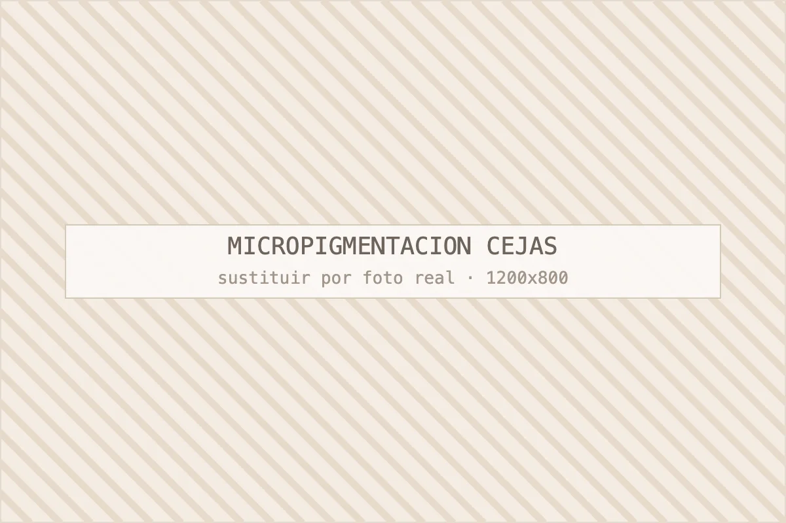

Tratamientos faciales
Preparar la piel antes y cuidarla después mejora la duración del pigmento.
Ver facialesCejas · Semipermanente
Técnica pelo a pelo, sombreado o combinada según tu piel. El diseño se dibuja y se aprueba contigo antes de implantar el primer trazo. Retoque incluido.

Es un procedimiento semipermanente que implanta pigmento en la capa superficial de la piel para reconstruir o densificar la ceja; el resultado dura entre 12 y 18 meses. No es un tatuaje: el pigmento se difumina de forma progresiva y no vira a azul si el producto y la profundidad son correctos.
La duración depende sobre todo de tu piel. En pieles grasas el trazo se difumina antes, en pieles secas aguanta más. La exposición solar sin protección es el factor que más acelera la pérdida de color, junto con los ácidos y retinoides que uses en la zona.
Resumen rápido: el pelo a pelo es la opción más natural y funciona en pieles normales o secas con ceja parcialmente poblada; el sombreado dura más, va mejor en pieles grasas y da una ceja más definida, tipo maquillaje suave.
| Criterio | Pelo a pelo (microblading) | Sombreado (powder brows) |
|---|---|---|
| Acabado | Trazos que imitan el vello | Difuminado uniforme, efecto maquillaje |
| Piel ideal | Normal y seca | Grasa, mixta y piel madura |
| Duración | 12–15 meses | 15–18 meses |
| Precio orientativo | Desde 220 € | Desde 250 € |
| Mantenimiento | Retoque anual | Retoque cada 12–18 meses |
En bastantes casos la mejor opción es la combinada: pelo a pelo en el inicio de la ceja y sombreado en la cola, que es donde suele faltar densidad. Lo decidimos en el diseño, mirando tu vello real y tu tipo de piel.
Una sesión de unas dos horas y media que empieza con el diseño y termina con la pauta de cuidados, más un retoque a las cuatro o seis semanas incluido en el precio.
Los primeros dos o tres días la ceja se ve más oscura e intensa de lo que será, luego aparece una costra muy fina y hacia el día diez el color aclara entre un 30 % y un 40 %. Ese aclarado asusta a casi todo el mundo y es completamente normal.
Durante diez días: nada de piscina, sauna, sol directo, cremas con ácidos ni maquillaje sobre la zona, y no arrancar la costra por mucho que pique. Te damos una crema reparadora y la pauta exacta. El color definitivo se juzga en el retoque, nunca antes.
Sí, cuando se hace con material estéril de un solo uso, pigmentos con ficha técnica conforme a la normativa europea y una valoración previa correcta. Es un procedimiento que atraviesa la barrera cutánea, así que la higiene no es un detalle.
No trabajamos en embarazo o lactancia, sobre dermatitis activa, queloides o cicatrices recientes en la zona, ni en personas en tratamiento con isotretinoína reciente o anticoagulantes sin informe médico. Puedes consultar el marco general de estos productos en la Agencia Española de Medicamentos y Productos Sanitarios.
En Centro Estética Barcelona el precio va de 220 € a 320 € según técnica y complejidad, con el retoque de las 4–6 semanas incluido. Las correcciones sobre trabajos previos de otro centro se presupuestan tras verlas en persona.
Un repaso anual para mantener el color cuesta bastante menos que una sesión completa. Tienes las cifras junto al resto de tratamientos en tarifas orientativas.
Si vienes con cejas micropigmentadas en otro centro y quieres corregir el color o la forma, la valoración es obligatoria y presencial: sobre pigmento antiguo no se puede prometer resultado sin ver cómo ha virado. En algunos casos toca despigmentar antes.
Preguntas frecuentes
Lo que nos preguntan en consulta sobre este tratamiento. Si te queda alguna duda, escríbenos por WhatsApp al 692 601 791.
Molesta poco: aplicamos anestésico tópico antes y lo reforzamos durante la sesión. La mayoría de clientas describe una sensación de rasguño o cosquilleo, más incómoda en la zona del entrecejo. Si tienes la regla o has dormido mal, la sensibilidad sube; se puede reprogramar sin problema.
Diez días para la cicatrización superficial y unas cuatro semanas para que el color se asiente del todo. En los tres primeros días la ceja se ve más intensa, luego forma una costra fina que se desprende sola y el color aclara alrededor de un 30–40 %. Por eso el retoque se hace a las 4–6 semanas y no antes.
Se puede aclarar y corregir, y en casos concretos despigmentar, pero es un proceso lento y no siempre queda la piel como estaba. Precisamente por eso dedicamos tanto tiempo al diseño previo: cuando la forma se aprueba con lápiz, el margen de sorpresa es muy pequeño. Nunca implantamos si no estás segura del dibujo.
Sí, es uno de los casos donde más cambia la cara. Sin vello de referencia el diseño se construye con las proporciones de tu rostro, y suele ir mejor un sombreado o una técnica combinada que el pelo a pelo puro. Si la pérdida de vello es reciente o repentina, conviene descartar causa médica antes.
Un repaso al año mantiene la ceja como el primer día; sin repaso, el pigmento se difumina por completo entre los 12 y los 18 meses. Las pieles grasas y quienes toman mucho sol necesitan repasos algo antes. El repaso es más corto y más económico que la sesión inicial porque la estructura ya está hecha.
Continúa por aquí
Casi ningún objetivo se resuelve con una sola técnica. Estas son las combinaciones que más sentido tienen junto a la micropigmentación.
Preparar la piel antes y cuidarla después mejora la duración del pigmento.
Ver facialesPrecio de la sesión, del retoque incluido y del repaso anual.
Consultar tarifasPara correcciones sobre trabajos previos es imprescindible verte.
Pedir valoraciónPedir cita
Cuéntanos qué te preocupa y te decimos con franqueza qué tratamiento tiene sentido en tu caso, cuántas sesiones necesitarías y cuánto costaría. Si creemos que no vas a notar resultados, te lo diremos.
Última actualización: · Contenido revisado por Jeisy, responsable de Centro Estética Barcelona.